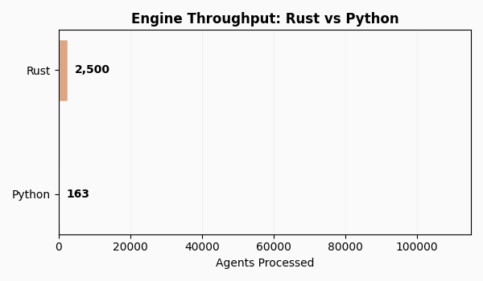

Performance#
PrefGraph uses a high-performance Rust engine (rpt-core) for large-scale longitudinal choice analysis. The design combines Rayon-based parallelism with SCC-optimized graph algorithms and HiGHS-backed linear programming to keep throughput high while bounding memory via streaming.
{kind=link}

Scalability and Throughput#
Throughput scales roughly linearly with the number of agents since each user is independent and processed in parallel. On a modern 10–12 core CPU, GARP-only processing reaches on the order of ~49k agents/sec; adding CCEI yields ~2.4k/sec; the comprehensive suite (GARP, CCEI, MPI, HARP) sustains ~2.0k/sec.

Latency follows suit: GARP-only averages around ~20 microseconds per agent, the GARP+CCEI configuration around ~420 microseconds, and the full four-metric suite around ~500 microseconds. These figures are indicative and scale with available cores and clock speeds.
Metrics |
Throughput (Agents/sec) |
Latency (per Agent) |
|---|---|---|
GARP Only (O(T²)) |
~49,000 |
20 μs |
GARP + CCEI |
~2,400 |
420 μs |
Comprehensive Metrics (GARP, CCEI, MPI, HARP) |
~2,000 |
500 μs |
Computational Complexity by Metric#
Costs differ by metric. Graph-based axioms (GARP) and indices like MPI are efficient because they rely on graph traversals and cycle checks; CCEI adds an outer binary search, effectively running GARP multiple times. This is reflected in the per-user timing curves below.

PrefGraph implements an O(T²) SCC-based approach for GARP, avoiding O(T³) all-pairs closures. CCEI therefore runs in roughly O(T² log T). Metrics such as MPI and HARP require O(T³) closures, while utility recovery and VEI rely on LP routines that behave close to O(T²) in practice. See Algorithms for details.
Memory Management and Streaming#
The engine maintains a flat memory profile by streaming users in fixed-size chunks. By default, batches of 50k users are processed, and intermediate buffers are released between batches, so peak memory depends on chunk size rather than total population.

At the default chunk size, peak memory typically falls in the 100–200 MB range. This keeps million-user analyses feasible on commodity hardware and allows scale-up by adjusting only the chunk size.
Large-Scale Benchmarks#
For budgets with T=20–100 and K=5, GARP alone completes 10k, 100k, and 1M agents in roughly 0.1s, 2.0s, and ~20s. Adding CCEI yields about 4.2s, 39.5s, and ~6.6 minutes. Running the full suite (GARP, CCEI, MPI, HARP) takes around 6.8s, 67.1s, and ~11 minutes for the same scales.
On discrete menus (50 items, 20–100 sessions), the SARP+WARP+HM bundle completes ~0.3s at 10k agents, ~5.2s at 100k, and ~85.6s at 1M. These timings were measured on Apple M‑series hardware and scale down proportionally with core counts.
Configuration |
10,000 Agents |
100,000 Agents |
1,000,000 Agents |
|---|---|---|---|
GARP (O(T²)) |
0.1s |
2.0s |
~20s |
GARP + CCEI |
4.2s |
39.5s |
~6.6 min |
Comprehensive Suite |
6.8s |
67.1s |
~11 min |
Metric Configuration |
10,000 Agents |
100,000 Agents |
1,000,000 Agents |
|---|---|---|---|
SARP + WARP + HM |
0.3s |
5.2s |
85.6s |
Complexity Summary#
In practice, GARP runs in O(T²), CCEI in O(T² log T), and MPI and HARP in O(T³). Houtman–Maks combines greedy FVS with exact ILP for small T, while utility recovery solves an LP with O(T²) scale. VEI computes observation-specific efficiencies via LP and tracks close to O(T²).
Algorithm |
Complexity |
Implementation Notes |
|---|---|---|
GARP |
O(T²) |
SCC-based arc-scan; avoids O(T³) transitive closure. |
CCEI (AEI) |
O(T² log T) |
Iterative binary search over T² potential efficiency ratios. |
MPI |
O(T³) |
Karp’s maximum-mean-weight cycle algorithm. |
HARP |
O(T³) |
Max-product path calculation via modified Floyd-Warshall. |
Houtman-Maks |
O(T²) / ILP |
Greedy FVS (approximate); ILP via HiGHS for exact solutions (T ≤ 200). |
Utility Recovery |
O(T²) |
Linear programming with 2T variables and T(T-1) constraints. |
VEI |
O(T²) |
Observation-specific efficiency via constrained optimization. |
Hardware Configuration#
All results here are from an Apple M‑series machine (11 cores). Performance scales near-linearly with cores; on 64‑core servers, end‑to‑end throughput typically improves by ~5× relative to a 10–12 core laptop.